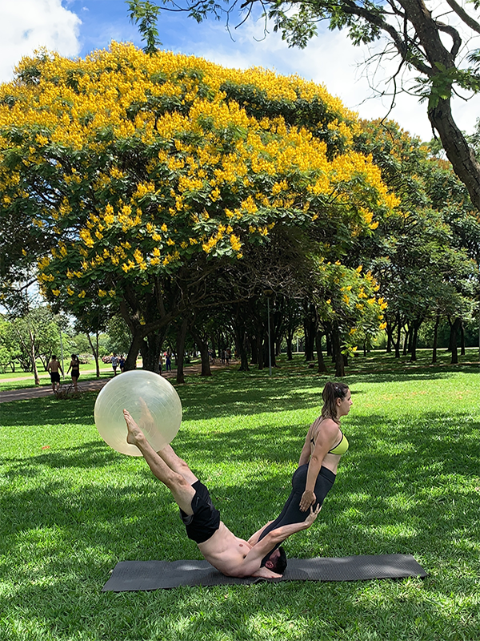
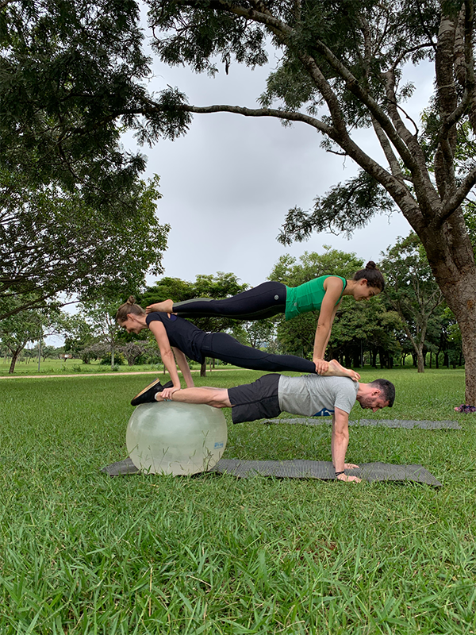

O Progressivefitball (PFB) é um método de exercício físico que pode ser utilizado na reabilitação e no treinamento físico, ou até mesmo, como forma de expressão através do movimento e diversão.
Desenvolvido pelo Fisioterapeuta Rafael Rabelo explora a FITBALL como um equipamento que oferece infinitas possibilidades de movimentos, buscando desenvolver as capacidades físicas do praticante: força, resistência, equilíbrio, flexibilidade, agilidade, coordenação motora e velocidade.
A prática do PFB no parque reúne todos os benefícios do método aliados ao prazer e bem estar da prática de atividades físicas ao ar livre!
A prática do ProgressiveFitBall ao ar livre pode proporcionar:
O método conta com as modalidades Básico, Intermediário e Avançado, além do AcroPFB, Freestyle e Calistenia.
|
|
 |  |
| Básico | Freestyle | Calistenia | AcroPFB |
| O Aluno conhece o método e a FitBall, desenvolve diversos exercícios que evoluem conforme seu desempenho. Esta categoria se completa com os níveis Intermediário e Avançado. | Após criar intimidade e ter domínio da FitBall o aluno pode combinar os exercícios do Básico e fazer transições entre estes criando novas possibilidades ao seu próprio estilo. | Aborda um conjunto de exercícios que utilizam o peso do próprio corpo. Demandam de força, equilíbrio, etc. e podem ser complementados com a FitBall. | Combina as características das outras modalidades como posturas na FitBall do Básico, Calistenia e até mesmo acrobacias gerais como da Yoga. Uma ótima maneira de se desafiar com outros participantes. |
|
Normalmente os treinos acontecem aos finais de semana no período da manhã no Parque da Cidade, Brasília - DF. Todo aluno é acompanhado pela instrutora Alessandra Ferro que após apresentar o exercício, fala dos seus benefícios e explica a importância do movimento, faz uma breve demonstração e acompanha o aluno. Tal acompanhamento é importante para a própria segurança do aluno e possíveis ajustes.
|
Desenvolvido por Tiago Segato - 2020